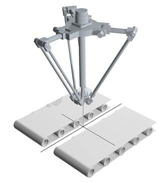

Axis Command
The SYNC command is used to synchronise one axis with a moving position on another axis. It does this by linking the DPOS of the slave axis to the MPOS of the master. So both axes must be programed in the same scale (for example mm). This can be used to synchronise a robot to a point on a conveyor. The user can define a time to synchronise and de-synchronise.
The synchronising movement on the base axis is the sum of two parts:
When the axis is synchronised it will follow the movements on the ‘sync_axis’. As the SYNC does not fill the MTYPE buffer you can perform movements while synchronised.
To synchronise to a new USER_FRAME using SYNC(20) requires the kinematic runtime FEC
As SYNC does not get loaded in to the move buffer it is not cancelled by CANCEL or RAPIDSTOP , you have to perform SYNC(4). When a software or hardware limit is reached the SYNC is immediately stopped with no deceleration.
Typically you can use the captured position for example REG_POS , or a position from a vision system for the ‘sync_position’. The pos1, pos2 and pos3 are typically the position of the sensor/ vision system in the current USER_FRAME .
SYNC(control, sync_time, [sync_position, sync_axis, pos1[, pos2 [,pos3]]])
|
Parameter |
Description |
|
control: |
1 = Start synchronisation, requires minimum first 5 parameters |
|
4 = Stop synchronisation, requires minimum first 2 parameters |
|
|
10 = Re-synchronise to another axis, requires minimum first 5 parameters |
|
|
20 = Re-synchronise to USER_FRAMEB , requires minimum first 5 parameters |
|
|
sync_time: |
Time to complete the synchronisation movement in servo period units. |
|
sync_position: |
The captured position on the sync_axis. |
|
sync_axis: |
The axis to synchronise with. |
|
pos1: |
Absolute position on the first axis on the base array |
|
pos2: |
Absolute position on the second axis on the base array |
|
pos3: |
Absolute position on the third axis on the base array |
The robot must pick up the components from one conveyor and place them at 100mm pitch on the second. The registration sensor is at 385mm from the robots origin and the start of the second conveyor is 400mm from the robots origin.

'axis(0) - robot axis x
'axis(1) - robot axis y
'axis(2) - robot axis z
'axis(3) - robot wrist rotate
'These are the actual robot axis, FRAME=14 can be applied to these
'axis(10) - conveyor axis
'axis(11) - conveyor axis
'These are the real conveyors that you wish to link to
'Sensor and conveyor offsets
sen_xpos = 385
conv1_yoff = 200
conv2_yoff = -250
conv2_xoff = 40
place_pos = 0
BASE(0,1)
'Move to home position.
MOVEABS(200,50)
'start conveyors
DEFPOS(0) AXIS(11) ' reset conveyor position for place
FORWARD AXIS(10)
FORWARD AXIS(11)
WAIT IDLE
WHILE(running)
REGIST(20,0,0,0,0) AXIS(10)
WAIT UNTIL MARK AXIS(10)
SYNC(1, 1000, REG_POS, 10, sen_xpos , conv1_yoff)
WAIT UNTIL SYNC_CONTROL AXIS(0)=3
'Now synchronised
GOSUB pick
SYNC(10, 1000, place_pos, 11, conv2_xoff, conv2_yoff)
WAIT UNTIL SYNC_CONTROL AXIS(0)=3
'Now synchronised
GOSUB place
SYNC(4, 500)
place_pos = place_pos + 100
WEND